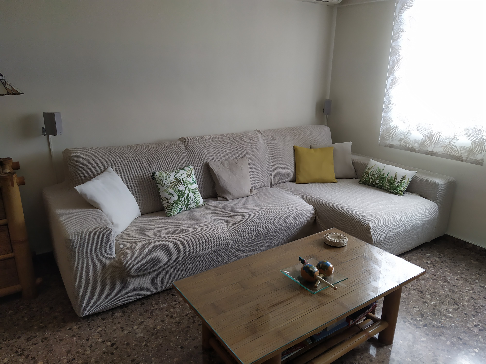
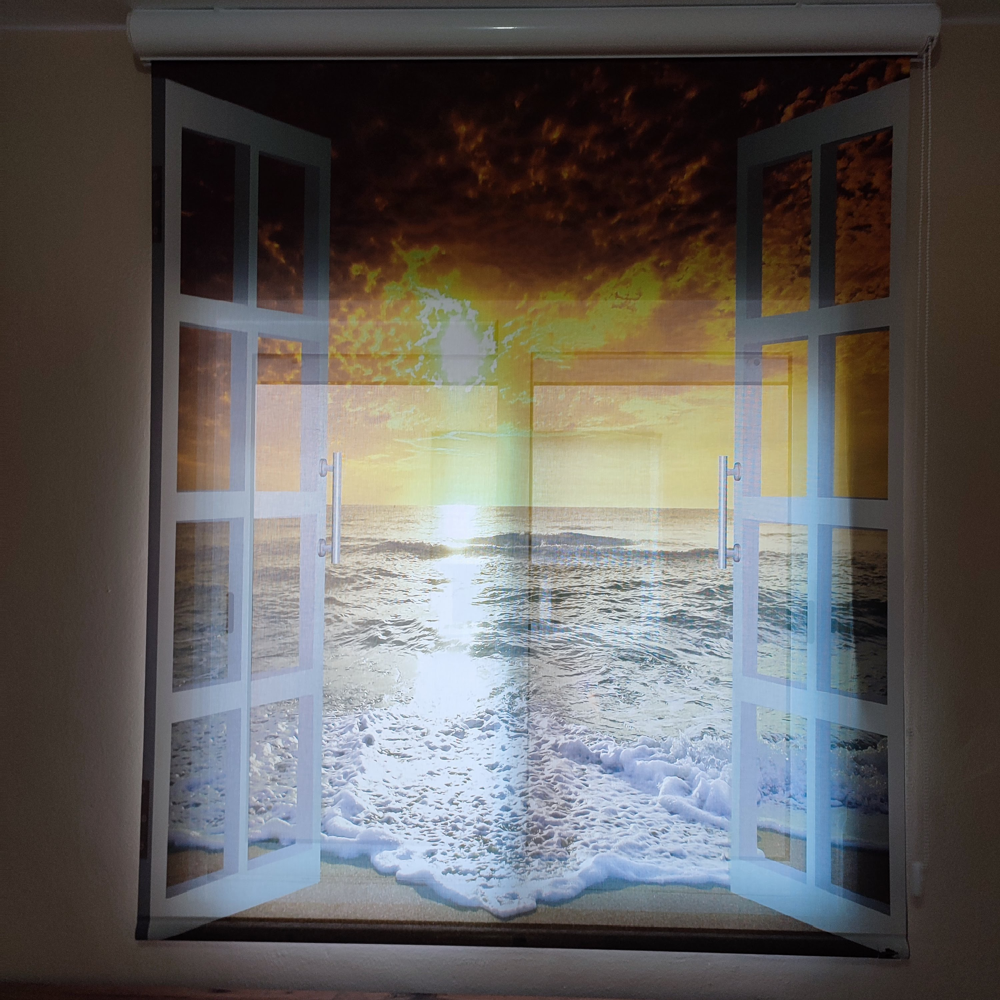

Domotica
Automatizacion inteligente de persianas y cortinas integrada en tu vivienda.
Que ofrecemos
La domotica aplicada a cortinas y estores mejora confort, eficiencia energetica y seguridad en vivienda o negocio. Automatizamos apertura y cierre con mandos, app o escenas programadas.
Puedes integrar sistemas motorizados con horarios de luz, asistentes de voz o control remoto para gestionar privacidad de forma inteligente.
Proceso de trabajo
Definimos el tipo de motor, alimentacion y control mas conveniente para cada hueco. Configuramos finales de carrera y probamos cada escena para asegurar funcionamiento estable.
Galeria de soluciones domoticas



